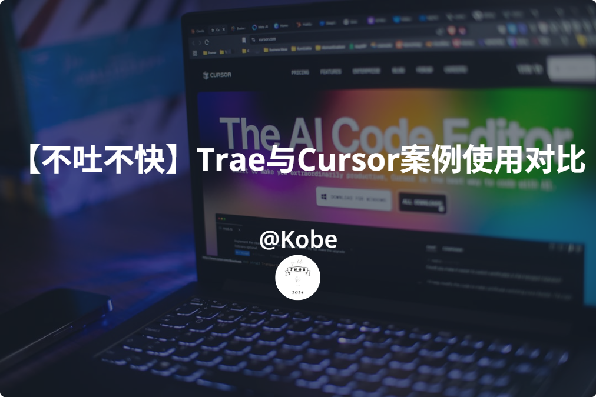
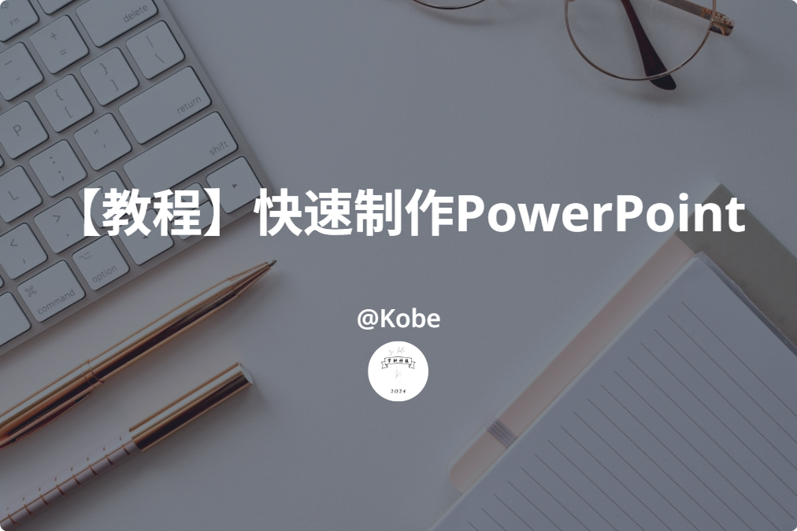

2025-06-09
【经验分享】如何搭建不同的博客并择优
本文为上次【Hexo博客搭建完全指南】的整合版本，不仅会讲述Hexo，还会告诉你所以...

2025-06-05
【不吐不快】Trae与Cursor案例使用对比
事情的起因是：由于我的Personal Website是前端中的原生开发，即为（HTML/CSS/JavaScript）...

2025-05-30
【教程】快速制作PowerPoint
思维模式：你仅需要抓住内容关键及重点，剩下的全部交给AI（Artificial Intelligence）...